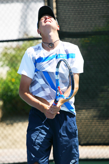
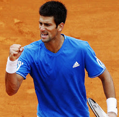
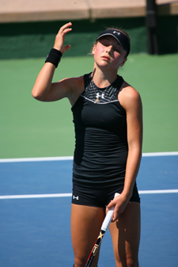
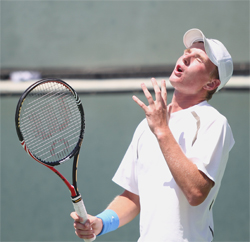
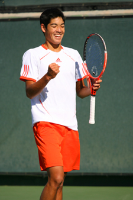
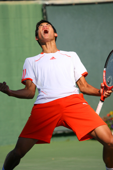

Previous: The Opportunity Attack | 🏠 Mental Game Home | Next: The Problem of Finishing
The Panic Signal
Comprehensive unified tennis knowledge base — Fundamentals, Stroke Analysis, Reference Library, and more
The Panic Signal
Joey Johnson

When a player is blindsided by pressure, it can set off the panic signal.
Most competitive tennis players would agree that creating peak performance is a balance between having their game dialed in tightly technically and tactically and avoiding what has been called the "panic signal."
The dreaded panic signal reaction occurs when a tennis player is blindsided by pressure, resulting in an inability to execute during competition. The game’s top performers are masters at keeping the right mindset. But they are also prepared to manage the panic signal should it appear with pressure moments.
Take for example the season that Novak Djokovic was able to put together by finishing the year ranked number one in the world in 2011 with a record of 70-6 and three grand slam titles. But how different things could have been had he not been prepared to manage the panic signal at the U.S. Open when he found himself down 3-5, 15-40 in the fifth set against Roger Federer.
Throughout the year he stayed in an amazingly consistent performance zone, physically and mentally. Despite his incredible talent, how did he remain so consistent under the stress and pressure of that year on the tour?
Let’s examine the chain reaction of events that occurs once the panic signal goes off within a player. I recall a competitive junior player I worked with who was going through a reoccurring under performance cycle in higher level competitive events. He told me that when he played in smaller tournaments he felt more comfortable and could manage the pressure fairly well.

How do players like Djokovic stay so consistent under pressure?
But when he moved into the higher-level events that required more travel he often found himself responding negatively to on the same on court pressures rather than playing within himself and following a game plan. It was a scared mindset that resulted in tightening up, becoming spooked, and attempting low percentage shots.
After some time reflecting on his dilemma, he realized that his pressing need to do well in these higher level events created a mentality that actually moved from the recesses of his mind down into all his body and affected everything about how he struck the ball.
He noted how tight he felt as he played and that his breathing was not relaxed. This mindset led him to play an overly forcing style, attempting to do things with the ball that he normally did not do.
Listening to his on court mental observations showed me that as talented as the player was, he was playing these matches in the "panic mode:" I asked him to list the thoughts that went through his mind, and these were his responses:

In panic mode: a litany of negative thoughts.
"I can’t choke, I need this win. I came this far so I have to play well."
"I have missed way too many returns! How is this possible? I haven’t done this in years!"
"I really wish this match would just end because my performance is absolutely painful."
"What is wrong with me today? I feel so different from my match yesterday."
"I may not have this opportunity for a long time. I need to stop making errors now!"
"My breathing feels strained and tense – I don’t like this feeling!"
"I keep clutching my racket – it’s so hard to relax out here."
"People are watching me, including my parents, who expect me to not only win this match but play a lot better than this!"
"I can’t hit my shots or handle the deeper hard balls – I’m getting pushed all over the place."
"I need to break serve more to make up for my low serve percentage."
Have you ever had these or similar thoughts when your own panic alarm has gone off unexpectedly?

The body reacts to negative perceptions created by the mind.
The mind creates perceptions, and the body begins to physically react to those perceptions. If you see a situation as difficult, your body will accept this assessment.
Short, rapid and shallow breathing replaces what should be the deep breaths that lead to more oxygen in the brain and more mental clarity. It’s a chain reaction that inhibits you from performing.
Every player has been there. It’s normal and certainly nothing to feel ashamed about. The key is to prepare for the panic signal so that when it appears--as it inevitably will at some point--you are able to counter it and move past its destructive effects.
My work with players has shown that through preparation and practice you can learn to respond instinctively and even positively to the situation. These techniques will allow you to overcome the challenge the panic signal poses.
At the end of this article, we’ll see how the young player described above was able to reverse the effects of the panic response and achieve his goal of playing to his potential.

There are 4 steps to counter the panic signal.
So do you counter the panic signal? There are four classical steps:
Set effective and clear on court goals
Practice mental rehearsal
Engage in effective self-talk
Practice arousal control
Now, let’s take a closer look at each of these.
On Court Goals
Setting clear and effective clear oncourt goals is what brings order and organization during high stress periods. These goals include clear game plan goals for each match. Having an effective game plan and the right organization in your mind is the first stone in the foundation.
There are two aspects to your game plan. You need tactics that are within your natural playing style. But they also should take into consideration the game style of your opponent.
Experience is the key to find the right balance between the two aspects. How aggressively or defensively are you comfortable playing against the major game styles?
There should be adjustments depending on whether you are playing a retrieving baseliner, an aggressive baseliner, or an all court player. For example, can you use the drop shot against a retriever who plays 10 feet behind the baseline, a shot that may not be at all appropriate against a player who positions closer in?
Can you balance the two aspects of your game plan?
Against an aggressive baseliner are you willing to stay in rallies longer to draw errors? Against players who approach the net, will you try to keep the ball down forcing tough low volleys or will you go for clear passing shots? If the player closes tightly can you use the lob?
The key to take the time to set particular on court goals prior to playing each match and keep them clear in your head. This presupposes you will put in the work in on the practice court to develop the ability to execute them.
Mental Rehearsal
The second step in effective preparation for the panic button is mental rehearsal. It’s important that you take time to practice seeing your performance in your mind prior to the event.
Take time each day to visualize yourself performing the key components of your game plan. This is a key to developing inner confidence and to lessening the stressful effect of the panic reaction. You need the experience of seeing yourself successfully execute your precise plan of action in your mind.
Seeing yourself execute your game plan leads to executing your game plan.
The best players in the world talk about how they will not only take time to visualize themselves playing but some even play entire sets out in their mind.
Positive Self Talk
Another vital step of preparation is positive self talk. Positive self talk gives you the ability to override the fear signal sent out by the brain in the form of doubt.
Words are powerful. Talking to yourself in convincing and positive way will help you build inner trust. Trust in yourself is necessary to survive the ups and the downs that are a part of performing under pressure.
Arousal Control
The last step in effective preparation is to create arousal control through effective breathing. This means learning to breath in a way that mimics the body’s relaxation process and brings more oxygen to the brain.
Positive self talk leads to trust.
This is important because under stress it is more difficult to control your thoughts and focus on executing your plan. Short rapid breathing goes hand in hand with feelings of panic.
Training yourself to deep breathe during high-stress periods when anxiety levels are elevated is critical to succeeding under intense pressure. This means practicing it on a daily basis when you make errors. By maintaining arousal control you will maintain an effective oxygen supply and in turn an effective energy level. The result is the ability to sustain focus all the way to the finish line.
Conclusion
Let’s see how this strategy worked for our junior player who was struggling to play well in higher level events. Within a few weeks of beginning to prepare for the panic signal he entered a large event at a level where he had never won a tournament.
I talked with him both before and after his matches to make sure that he was working to follow the four steps.
In the first two rounds he was able to win but still felt fairly uncomfortable and did not feel like his quality of play was near his potential. I kept reassuring him that even though his game did not feel crisp yet it would come in time and that it was an excellent sign that he had found a way to win these first two matches.

After the final: a great phone call from an elated player.
We discussed the process of refining his game plan and taking time to mentally rehearse his execution. We evaluated how he was talking to himself in between points and on changeovers. My focus was to get the voice inside his mind right for him. I also asked him about how he was breathing during and after points.
I could tell that all these areas were becoming more routine. My player in turn recognized that his pre-match anxiety was more manageable.
I reminded him that experiencing some level of pre-match anxiety is normal and can be a very good thing if your mindset is moving in the right direction.
We worked together to achieve the right balance for him on all these factors. As he built his momentum he was able to reach the finals and was literally a different person from the guy who called me after playing such a shaky first round match.
After the finals I received a phone message I will always remember. "Call me now – I have something to tell you". Then an elated young competitor shared with me the news that he just captured his first high level title.
I asked him to summarize what happened during this breakthrough tournament experience. His response was classic.
"I felt like everything flowed once I got out there. When I got up to the line I was focused, my game felt solid and manageable and as I went deeper into the draw each match I felt my confidence build and my ability to execute my game plan was more consistent."
Flow can result from mastery of the panic signal.
"During rallies I was just solid and didn’t take unnecessary risks. I wouldn’t say that I performed my absolute best but it felt very solid by the finals and like I was playing to my potential."
"This is what I liked the most, the feeling that I was able to play the way I know I can play and do it throughout a tournament. At the end of the tournament when I looked at my overall stats they were better than in a long time."
This story illustrates that the seemingly small details of preparing—details seemingly having nothing to do with forehands or backhands—can be monumental in producing breakthroughs.
Working at each of the four classical steps to deal with the panic signal can move your mindset from uncertain and anxious to determined and focused. Without this work, few players will ever reach their potential under tournament pressure.
For the past 30 years, Joey Johnson has been competing, coaching, and consulting in the area of human performance. Growing up in frigid Northern Minnesota, he discovered tennis at the age of 11 and went on to an All American career at Ole Miss. He has coached and played on the ATP tour, coached at Brigham Young University, and worked with amateur, Olympic, and professional athletes in a variety of sports. He is the author of Worthy to Win: Emerging from Fear and Self Doubt. Want to learn more about Joey's Worthy to Win training and consulting programs? Click Here!

In Worthy to Win, Joey Johnson shows how at the core of every successful performer is a deserving mind set. This mindset creates the belief and confidence that will propel you toward your potential. Worthy to Win outlines 8 steps that will revolutionize the way you prepare for matches and lead to the breakthroughs and big wins you dream about. Learn to tap into the power of pressure, ride the performance wave, and much more. For more information and to order, Click Here!
Source: tennisplayer.net archive — The Panic Signal.docx (John Yandell teaching library, 2002-2022). Extracted and rendered as HTML for Tennis Future Lab.